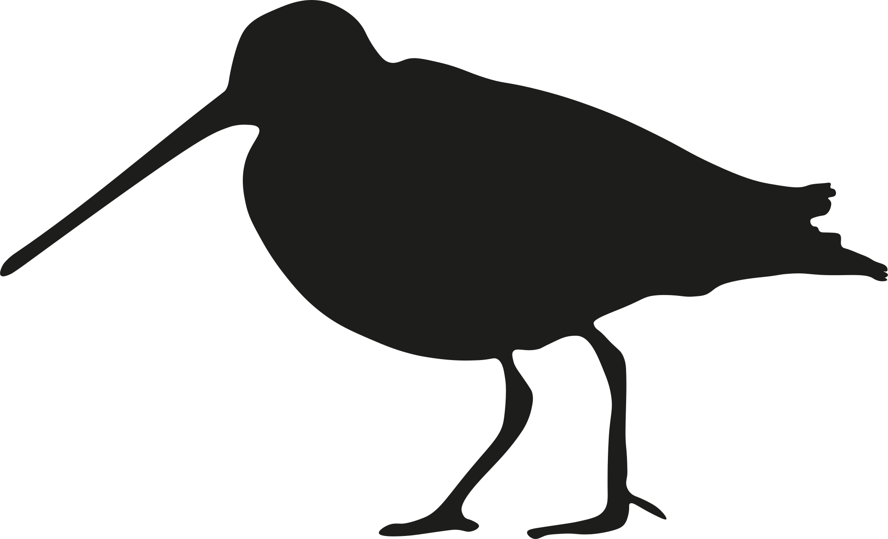

Publications
Preprints
Campbell, CJ; Nelson, DM; Nagel, J; Clerc, J; Weller, TJ; Weiringa, JG; Fraser, E; Longstaffe, FJ; Hale, AM; Lout, M; Pruitt, L; Guralnick, R; Vander Zanden, HB. Unusual migratory strategy a key factor driving interactions at wind energy facilities in at-risk bats. BioRXiv. [link].Rubin, J; Campbell, CJ; Carvalho, APS; St Laurent, RA; Crespo, GI; Pierson, TL; Guralnick, RP; Kawahara, AY. Macroevolutionary constraint and selection on anti-bat moth tails. BioRXiv. [link]
Vinod Anand, A; Campbell, CJ; Loiselle, B; Guralnick, R. Precipitation tolerance determines elevational migration strategies of resident birds of the Western Ghats of India. BioRXiv. [link]
Peer-reviewed
16. Campbell, CJ; Gardner, JH; Rushing, CS; Norvell, R; Farr, CM; Savides, K. Quantifying rosy-finch migration with stable hydrogen isotope feather markers highlights the need for inter-state collaboration to reach conservation goals. 2025. Avian Conservation and Ecology. 20(1):6. [link] [pdf]15. Belitz, M; Campbell, CJ; Drum, RM; Leuenberger, W; Morelli, TL; Nail, J; Shirey, V; Warner, S; Thogmartin, W; Zipkin, EF. A case for community assemblage-level conservation to address the biodiversity crisis. Nature Reviews Biodiversity. 2025. 1, 134–143. [link] [pdf]
 14. Carpenter, B* & Campbell, CJ*; Fanning, A; McBride, M. Extensive migratory mixing of wintering Wilson’s snipe (Gallinago delicata) highlights the need for international coordination for monitoring and management. Ornithological Applications. duae064. [link] [pdf]
 13. Campbell, CJ; Cheng, T; Akre, K; Adams, A; Solick, D; Bennett, A; Newman, C; Frick, W. Maximizing benefits to bat populations through management of power line corridors. Ecological Solutions and Evidence. 5 (4), e12392. [link] [pdf]
13. Campbell, CJ; Cheng, T; Akre, K; Adams, A; Solick, D; Bennett, A; Newman, C; Frick, W. Maximizing benefits to bat populations through management of power line corridors. Ecological Solutions and Evidence. 5 (4), e12392. [link] [pdf]
 12. Adams, A.M. Trujillo, L.A.; Campbell, C.J.; Akre, K.L.; Arroyo-Cabrales, J.; Burns, L.; Coleman, J.T.H.; Morris, K. M.; Ortega, J.; Reichard , J.D.; Reichert, B.; Segers, J.L.; Whitby, M.D.; Frick, W.F.. The State of the Bats in North America. The Annals of the New York Academy of Sciences. 2024, 1–14. [link] [pdf]
12. Adams, A.M. Trujillo, L.A.; Campbell, C.J.; Akre, K.L.; Arroyo-Cabrales, J.; Burns, L.; Coleman, J.T.H.; Morris, K. M.; Ortega, J.; Reichard , J.D.; Reichert, B.; Segers, J.L.; Whitby, M.D.; Frick, W.F.. The State of the Bats in North America. The Annals of the New York Academy of Sciences. 2024, 1–14. [link] [pdf]
11. Wieringa, JM; Nagel, J; Campbell, CJ; Nelson, DM; Carstens BC; Gibbs, HL. 2024. Geographic sources of bats killed at wind-energy facilities in the eastern United States. PeerJ 12, e16796. doi: 10.7717/peerj.16796
 10. Campbell, CJ; Barve, V; Belitz, M; Doby, J R; White, E; Seltzer, C; Di Cecco, G; Hurlbert, AH; Guralnick, R. 2023. Identifying the Identifiers: How iNaturalist facilitates collaborative, research-relevant data generation and why it matters for biodiversity science. BioScience. 2023. [link] [pdf] [code]
10. Campbell, CJ; Barve, V; Belitz, M; Doby, J R; White, E; Seltzer, C; Di Cecco, G; Hurlbert, AH; Guralnick, R. 2023. Identifying the Identifiers: How iNaturalist facilitates collaborative, research-relevant data generation and why it matters for biodiversity science. BioScience. 2023. [link] [pdf] [code]
9. McCleery, R; Guralnick, R; Beatty, M; Belitz, M; Campbell, CJ; Idec, J; Jones, M; Kang, Y; Potash, A; and Fletcher, RJ. 2023. Uniting Experiments and Big Data to advance ecology and conservation. Trends in Ecology & Evolution. [link] [pdf]
8. Wieringa, JG; Nagel, J; Campbell, CJ; Nelson, DM; Carstens, BC; Gibbs, HL. 2023. Combining stable isotopes, trace elements, and distribution models to assess the geographic origins of migratory bats. Ecosphere 14(6), e4588. [link]
7. Smith, LM; Gore, JA; Doonan, TJ; Campbell, CJ 2022. Tricolored bats at a southern range edge exhibit partial migration northward in autumn. Movement Ecology 10(1), 1-13. [link] [pdf] [code]
 6. Campbell, CJ; Nelson, DM; Gates, JE; Gibbs, HL; Stevenson, ER; Johnson, B; Nagel, J; Trott, R; Wieringa, JG; Vander Zanden, HB. 2022. White-nose syndrome pathogen Pseudogymnoascus destructans detected on migratory bats during summer and autumn, including hoary bat (Lasiurus cinereus). Journal of Wildlife Diseases. [link] [pdf] [code]
6. Campbell, CJ; Nelson, DM; Gates, JE; Gibbs, HL; Stevenson, ER; Johnson, B; Nagel, J; Trott, R; Wieringa, JG; Vander Zanden, HB. 2022. White-nose syndrome pathogen Pseudogymnoascus destructans detected on migratory bats during summer and autumn, including hoary bat (Lasiurus cinereus). Journal of Wildlife Diseases. [link] [pdf] [code]
5. Campbell, CJ; Fitzpatrick, MC; Vander Zanden, H; Nelson, DM. 2020. Advancing interpretation of stable isotope assignment maps: comparing and summarizing origins of known-provenance migratory bats. Animal Migration. [link] [pdf]
4. Katzner, TE; Nelson, DM; Diffendorfer, JE; Duerr, AE; Campbell, CJ; Leslie, D; Vander Zanden, HB; Yee, JL; Sur, M; Huso, MMP; Braham, MA; Morrison, ML; Loss, SR; Poessel, SA; Conkling, TJ; Miller, TA. 2019. Wind energy: An ecological challenge. Science 366(6470):1206–1207. [link] [pdf]
3. Nelson, DM; Nagel, J; Trott, R; Campbell, CJ; Pruitt, L; Good, RE; Iskali, G; Gugger, PF 2018. Carcass age and searcher identity affect morphological assessment of sex of bats. The Journal of Wildlife Management 82(8), 1582-1587. [link] [pdf]
2. Campbell, CJ; Nelson, DM; Ogawa, NO; Chikaraishi, Y; Ohkouchi, N. 2017. Trophic position and dietary breadth of bats revealed by nitrogen isotopic composition of amino acids. Scientific Reports 7:15932. [link] [pdf] [code]
 1. Roman, J; Altman, I; Dunphy-Daly, M; Campbell, C; Jasny, M; Read, A. 2013. The Marine Mammal Protection Act at 40: Status, recovery, and future of U.S. marine mammals. The Annals of the New York Academy of Sciences 1286:29-49. [link] [pdf]
1. Roman, J; Altman, I; Dunphy-Daly, M; Campbell, C; Jasny, M; Read, A. 2013. The Marine Mammal Protection Act at 40: Status, recovery, and future of U.S. marine mammals. The Annals of the New York Academy of Sciences 1286:29-49. [link] [pdf]